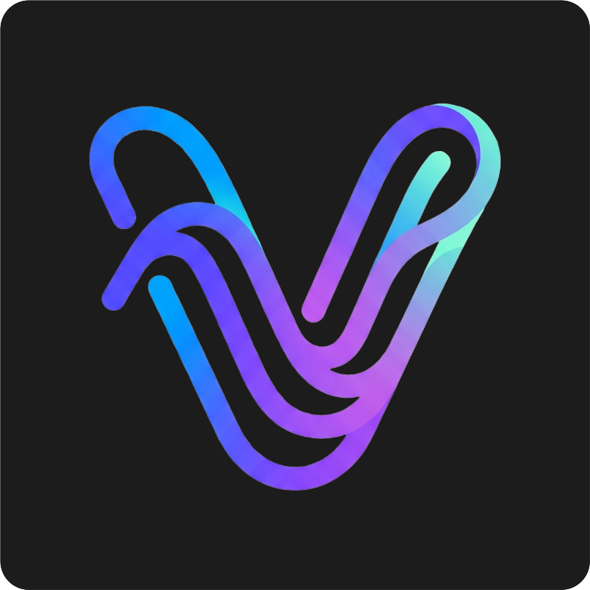

Agents in parallel
Claude, Codex, Gemini and OpenCode running side by side, each in its own profile. A flame badge shows who's thinking, who's done, and who needs you.

VybVyb is the cockpit I built to run a pile of AI coding agents at once - across every project I'm juggling. Launch them, watch them work, diff their changes live, and keep git, tasks and docs all in view.
A real session, many agents, one window.
Claude, Codex, Gemini and OpenCode running side by side, each in its own profile. A flame badge shows who's thinking, who's done, and who needs you.
Watch edits land in real time. See exactly what an agent touched, line by line — while it's still working, not after.
Full GPU-accelerated terminals per project. Split them side by side, drop files straight in, and keep your shells right next to the agents.
A built-in Monaco editor and lazy file tree. Open, tweak, and save without leaving Vyb. Images and markdown render inline too.
Branch, staged and modified counts, ahead/behind, stashes and the last commit, always live in the status bar, with a fetch button on tap.
Plan work on a board scoped to each project — then dispatch a task straight to an agent and let it pick up the context.
A real browser pane right beside your work. Click a link an agent surfaces, read the docs, and never lose your place in a sea of tabs.
No wall of tabs, no scattered windows. Profiles, workspaces and folders keep a dozen projects tidy — and a single keystroke flips between them.
Vyb started as a tool for me. I run a lot of projects and a lot of terminals, and I wanted one place to launch agents, watch them work, diff their changes, and keep git and tasks in view — without drowning in windows and tabs.
It's mostly vibe-coded: built fast, by feel, for the way I actually work. I only put it out there because friends kept asking for a copy. No roadmap promises, no growth targets; just a passion project I'm happy to share.
- Fredrik
Vyb is released under the MIT license — the whole thing is on GitHub. It costs nothing, it'll keep costing nothing, and you're free to use it, fork it, and dig through how it works.
No accounts, no telemetry, no upsell. Just a tool I share.